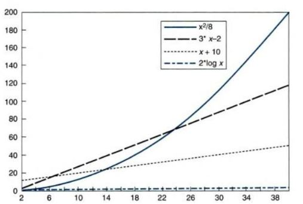

Q.1: What are the rules of manipulate Big-Oh expressions and about the typical growth rates of algorithm?
Answer:
Rules of manipulate Big-Oh expressions
Rule 1 (Sequential Composition) The worst-case running time of a sequence of C++ statements such as
S1;
S2;
.
Sm;
is O(max(T1(n), T2(n),...,Tm(n))), where the running time of Si, the ith statement in the sequence, is O(Ti(n)).
Rule 2 (Iteration) The worst-case running time of a C++ for loop such as
for (S1, S2, S3 )
S4;
is O(max(T1(n), T2(n) X (l(n)+1), T3(n) X l(n), T4(n)X l(n))), where the running time of statement Si is O(Ti(n)), for i = 1, 2, 3, and 4, and I(n) is the number of iterations executed in the worst case.
Rule 3 (Conditional Execution) The worst-case running time of a C++ if-then-else such as
if (S1)
S2;
else
S3 ;
is O(max(T1(n), T2(n), T3(n))) the running time of statement Si is O(Ti(n)), for i = 1, 2, 3.
RATES OF GROWTH
In analysis of algorithms, it is not important to know exactly how many operations an algorithm does. Of greater concern is the rate of increase in operations for an algorithm to solve a problem as the size of the problem increases. This is referred to as the rate of growth of the algorithm. What happens with small sets of input data is not as interesting as what happens when the data set gets large.
Because we are interested in general behavior, we just look at the overall growth rate of algorithms, not at the details. If we look closely at the graph in Fig. 1.1, we will see some trends. The function based on x increases slowly at first, but as the problem size gets larger, it begins to grow at a rapid rate.
